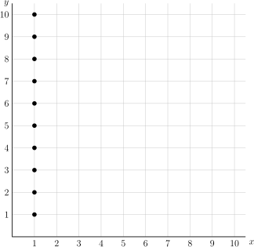
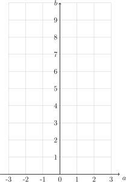

Section 1.3 Relations and Functions
Subsection 1.3.1 Relations \(\require{cancel}\)
Definition 1.3.1.
A mathematical relation, \(\mathrel{R}\text{,}\) between two sets \(A\) and \(B\) is a collection of ordered pairs from the two sets. Expressed symbolically, \(\mathrel{R} \subseteq A \times B\text{.}\)
We call set \(A\) the domain and the set \(B\) the codomain.
If \(a\) is related to \(b\) we will write \(a \mathrel{R} b\) or \((a,b) \in \mathrel{R}\text{.}\) If two elements \(c \) and \(d\) are not related, we write \(c \cancel{\mathrel{R}} d\text{.}\)
Example 1.3.2.
If we consider \(A\) and \(B\) to both be the set of people in your family, and let \(\mathrel{R}\) be the relation “\(a\) is a sibling of \(b\text{.}\)” Here's an example of my family in two graphical representations. What are the ordered pairs that make up the relation?
Example 1.3.3.
Let \(A\) and \(B\) both be the set of integers from 1 to 10, and define the relation by \(a \mathrel{R} b\) means that \(a\) evenly divides into \(b\text{.}\)
Here \(2 \mathrel{R} 4\) since 2 divides into 4 evenly. Similarly \(5 \mathrel{R} 5\) since it divides into itself. \(6 \cancel{\mathrel{R}} 3\) since 6 doesn't divide into 3.
Complete the following graph of the relation below, where a point on \((x,y)\) means that \(x \) divides evenly into \(y\text{.}\)
Now list all ordered pairs in the relation.
The complete listing of the relation is: \(R= \{(1,1),(1,2),(1,3),(1,4),(1,5),(1,6),(1,7),(1,8),(1,9),(1,10),\\(2,2),(2,4),(2,6),(2,8),(2,10),(3,3),(3,6),(3,9),(4,4),(4,8),\\(5,5),(5,10),(6,6),(7,7),(8,8),(9,9),(10,10)\}\)
and a video for the graph:
Example 1.3.4.
The domain and codomain don't have to be the same. For example, let \(\mathrel{R}\) be the relation from the set of people in discrete math class to the natural numbers which maps a person to their height in inches. In this example, \((\text{John}, 76) \in \mathrel{R}\text{.}\) What ordered pair represents you?
Example 1.3.5.
Let \(\mathrel{R}\) be the relation from \(\N\) to \(\N\) where we say \(a \mathrel{R} b\) if \(a^2 = b\text{.}\)
- List the first few ordered pairs of the relation for \(a = 0, 1, 2, \dots 5\text{.}\)
Plot points for the graph of \(\mathrel{R}\) for \(a =-3, -2, -1, 0, 1, 2, 3\text{.}\)

Definition 1.3.6.
Let \(R\) be a relation between sets \(A \and B\text{.}\) The inverse relation of \(R\) is the relation that assigns to each element \(b\in B\) an element \(a \in A\text{.}\) We denote the inverse by \(R^{-1}\text{,}\) so that
for \(a \in A \and b \in B\text{.}\)
Example 1.3.7.
For the purposes of this exercise, the universe of discourse for numeric sets is \(\R\) and the universe of discourse for \(R_4\) and \(R_5\) are the set of people. For example, the relation \(R = \{(x, y) \mid y = 2x + 1\}\) has the inverse \(R^{-1} = \{(x, y) \mid y = (x-1)/2\}\text{.}\) Use this form to give inverses of the following relations:
- \(\displaystyle R_1 = \{ (x,y) \mid y = -3x + 2\}\)
- \(\displaystyle R_2= \{ (x,y) \mid y = x^2 + 2\}\)
- \(\displaystyle R_3 = \{(x,y) \mid y \gt 3x - 4\}\)
- \(\displaystyle R_4 = \{(x,y) \mid x \text{ is the parent of } y \}\)
- \(\displaystyle R_5 = \{(x,y) \mid x \text{ is a sibling of } y \}\)
Subsection 1.3.2 Functions
Definition 1.3.8.
A function from the set \(A\) to the set \(B\) is a relation with the property that exactly one element from \(B\) is mapped to each element of the set \(A\text{.}\)
- We denote this relation by \(f:A\to B\)
- If \(b\in B\) is the unique element assigned to \(a\in A\text{,}\) we write \(f(a)=b\)
If \(f(a) = b\text{,}\) we call
- \(b\) is the image of \(a\) under the mapping
- \(a\) is the preimage of \(b\) under the mapping
and we define the range of the function \(f\) to be the set of images of every element in the domain, \(A\text{,}\) and often write the range by \(f(A)\text{.}\) Note that the range is a subset of the codomain, \(f(A)\subseteq B\text{.}\)
Answer/VideoNote 1.3.9.
A function has two pieces of information:
- Specification of two sets, the domain and codomain
- A mapping between those two sets
In this class, we will be using a variety of ways of describing the domain and codomain of a function, from writing \(f:A \to B\) to describing them in words.
Example 1.3.10.
Find the domain, codomain, and range of the following functions:
- Let \(f: \mathbb{Z} \to \mathbb{Z}\) be defined by \(f(x)=x^2\)
- Let \(g: \mathbb{R} \to \mathbb{R}\) be defined by \(g(x)=x^2\)
Definition 1.3.11.
A function \(f\) is said to be injective or one-to-one if and only if \(f(a) = f(b)\) means that \(a = b\) for all \(a \text{ and } b\) in the domain of \(f\text{.}\)
Note 1.3.12.
To determine if a function \(f: A \to B\) is injective, we show that if \(f(x) = f(y)\) for arbitrary values \(x, y \in A\) with \(x \not= y\text{,}\) we conclude \(x=y\text{.}\) (A direct proof).
To determine if a function \(f: A \to B\) is not injective, we find particular elements \(x, y \in A\) such that \(x \not= y\) but \(f(x) = f(y)\) (a counterexample!)
Answer/VideoExample 1.3.13.
Determine if the following functions are injective. If so, prove it. If not, provide a specific counterexample showing that it is not.
- Let \(f:\mathbb{R} \to \mathbb{R}\) be defined by \(f(x) = 2x-1\text{.}\)
- Let \(g(x) = x^2\) be the mapping from \(\mathbb{R} \to \mathbb{R}\text{.}\)
Definition 1.3.14.
A function \(f\) from \(A\) to \(B\) is said to be surjective or onto if and only if for every element \(b \in B\text{,}\) there is an element \(a \in A\) such that \(f(a) = B\text{.}\)
Answer/VideoExample 1.3.15.
Determine if the following functions are surjective. If so, prove it. If not, provide a specific counterexample showing that it is not.
- Let \(f:\mathbb{R} \to \mathbb{R}\) be defined by \(f(x) = 2x-1\text{.}\)
- Let \(g(x) = x^2\) be the mapping from \(\mathbb{R} \to \mathbb{R}\text{.}\)
- Let \(g(x) = x^2\) be the mapping from \(\mathbb{Z} \to \mathbb{Z}\text{.}\)
- Let \(g(x) = x^3\) be the mapping from \(\mathbb{Z} \to \mathbb{Z}\text{.}\)
Two videos in this section:
Note 1.3.16.
If a function is onto, the range is exactly the codomain
To determine if a function \(f: A \to B\) is surjective, we show that given an arbitrary element \(y \in B\) we can find an element \(x\in A\) such that \(f(x)=y\text{.}\) (A direct proof).
To determine if a function \(f: A \to B\) is not surjective, we find a particular element \(y \in B\) such that \(f(x) \not= y\) for all \(x\in A\) (a counterexample!)
Definition 1.3.17.
A function \(f\) from \(A\) to \(B\) is said to be a one-to-one correspondance or bijective if it is both injective and surjective.
Example 1.3.18.
Determine if the following are bijections from \(\mathbb{R} \to \mathbb{R}\text{:}\)
- \(\displaystyle f(x) = -3x^2 + 7\)
- \(\displaystyle f(x) = x^5 + 1\)
- \(\displaystyle f(x) = 5^x\)
- \(\displaystyle \ds f(x) = \frac{x+1}{x+2}\)
- Which of the functions we've considered so far have been bijections?
Definition 1.3.19.
Let \(f:A \to B\) be a bijection. The inverse function of \(f\) is the unique function that assigns to each element \(b\in B\) a unique element \(a \in A\) such that \(f(a) = b\text{.}\) We denote the inverse by \(f^{-1}\) so that
Note 1.3.20.
As we've seen, the inverse of a relation is always a relation, but not always a function. In order for a function to have an inverse function, the function must be bijective.
Example 1.3.21.
For the bijection(s) found in Example 1.3.18, find the inverse function.
Example 1.3.22.
Restrict the domain and/or codomain so that \(f(x) = x^2 + 1\) is invertible. Verify your answer is correct.
In order for \(f\) to be injective, we can restrict the domain to just the non-negative real numbers: \([0, \infty)\text{.}\) In order for \(f\) to be surjective, using the codomain to be the interval \([0, \infty)\) works for the chosen domain.
Alternatively, if we choose the domain to be \(\N\text{,}\) then the range is only square numbers, so the codomain would need to be \(\{0, 1, 4, 9, 16, \dots\}\text{.}\)
Definition 1.3.23.
Let \(g:A \to B\) and let \(f:B \to C\text{.}\) The composition of \(f\) and \(g\), denoted by \(f\circ g\) is defined, for all \(a \in A\text{,}\) by \((f \circ g)(a) = f(g(a))\text{.}\)
Example 1.3.24.
Let \(f(x) = 5x-3\) and \(g(x) = 3x^2-5\text{.}\) Find \(f\circ g\) and \(g\circ f\)
This is basic algebra. \((f \circ g)(x) = 15x^2 - 28 \and (g \circ f)(x) = 75x^2 - 90x + 22\)
Example 1.3.25.
Suppose \(f\) and \(f\circ g\) are injective. Does it follow that \(g\) is also injective?
Note 1.3.26.
Since given a function \(f: A \to B\) we define \(f^{-1}: B \to A\) by \(f(a) = b \iff f^{-1}(b) = a\) for \(a \in A\text{,}\) \(b \in B\text{,}\) we have:
-
for \(b \in B\text{,}\) we have
\begin{equation*} (f \circ f^{-1})(b) = f(f^{-1}(b)) = f(a) = b \in B \end{equation*} -
and for \(a \in A\text{,}\) we have
\begin{equation*} (f^{-1} \circ f)(a) = f^{-1}(f(a)) = f^{-1}(b) = a \in A \end{equation*}
That is, the inverse “undoes” a function.
Exercises 1.3.3 Exercises
1.
Consider the relation \(R = \{ (x, y) \mid y = x^2, \text{ for } x=-3, -2, -1, \dots 2, 3\}\text{.}\)
- Is \(R\) a function?
- Find \(R^{-1}\text{.}\)
- Is \(R^{-1}\) a function? Why or why not?
2.
- Is the sibling relation defined in Example 1.3.2 a function? Why or why not?
- Is the divides relation between the sets \(\{1, 2, 3, \dots, 10\}\) to itself a function? Why or why not?
- Is the height relation between the set of people and the set of natural numbers a function? Why or why not?
3.
Let \(\mathrel{R}\) be the relation between the set \(A\) and itself defined by \(a \mathrel{R} b\) whenever \(a \and b\) are exactly the same object.
- What is the familiar way we normally write this relation?
- Is this relation a function? If so, what is the algebraic definition?
4.
Reformulate Definition 1.3.23 in order to define composition of two relations.
5.
Using the relations defined in Example 1.3.7, find the following compositions:
- \(\displaystyle R_1 \circ R_2\)
- \(\displaystyle R_2 \circ R_1\)
- \(\displaystyle R_4 \circ R_4\)
- \(\displaystyle R_5 \circ R_4\)
- \(\displaystyle R_4 \circ R_5\)
6.
Consider the function \(f:\{1,2,3,4,5\} \to \{1,2,3,4\}\) given by the table below:
| \(x\) | 1 | 2 | 3 | 4 | 5 |
| \(f(x)\) | 3 | 2 | 4 | 1 | 2 |
Is \(f\) injective? Explain.
Is \(f\) surjective? Explain.
Is \(f^{-1}\) a function? Explain.
- No, the function is no injective. \(2 = f(2) = f(5) = 2\) but clearly \(2 \not= 5\)
- Yes, the function is surjective. The codomain is \(\{1, 2, 3, 4\}\) and each element of the codomain is mapped (the range equals the codomain)
7.
Consider the function \(f:\{1,2,3,4\} \to \{1,2,3,4\}\) given by the graph below.

Is \(f\) injective? Explain.
Is \(f\) surjective? Explain.
8.
For each function given below, determine whether or not the function is injective and whether or not the function is surjective.
- \(f:\N \to \N\) given by \(f(n) = n+4\text{.}\)
- \(f:\Z \to \Z\) given by \(f(n) = n+4\text{.}\)
- \(f:\Z \to \Z\) given by \(f(n) = 5n - 8\text{.}\)
- \(f:\Z \to \Z\) given by \(f(n) = \begin{cases}n/2 \amp \text{ if } n \text{ is even} \\ (n+1)/2 \amp \text{ if } n \text{ is odd} . \end{cases}\)
- \(f\) is injective, but not surjective (since 0, for example, is never an output).
- \(f\) is injective and surjective. Unlike in the previous question, every integers is an output (of the integer 4 less than it).
- \(f\) is injective, but not surjective (10 is not 8 less than a multiple of 5, for example).
- \(f\) is not injective, but is surjective. Every integer is an output (of twice itself, for example) but some integers are outputs of more than one input: \(f(5) = 3 = f(6)\text{.}\)
9.
Determine whether \(f:\Z \times \Z \to \Z\) is surjective if
- \(\displaystyle f(m,n) = m + n\)
- \(\displaystyle f(m,n) = m^2 + n^2 \)
- \(\displaystyle f(m,n) = m\)
- \(\displaystyle f(m,n) = m - n\)
10.
Consider the function \(f:\Z \to \Z\) given by \(f(n) = \begin{cases}n+1 \amp \text{ if }n\text{ is even} \\ n-3 \amp \text{ if }n\text{ is odd} . \end{cases}\)
Is \(f\) injective? Prove your answer.
Is \(f\) surjective? Prove your answer.
-
\(f\) is injective.
Proof.
Let \(x\) and \(y\) be elements of the domain \(\Z\text{.}\) Assume \(f(x) = f(y)\text{.}\) If \(x\) and \(y\) are both even, then \(f(x) = x+1\) and \(f(y) = y+1\text{.}\) Since \(f(x) = f(y)\text{,}\) we have \(x + 1 = y + 1\) which implies that \(x = y\text{.}\) Similarly, if \(x\) and \(y\) are both odd, then \(x - 3 = y-3\) so again \(x = y\text{.}\) The only other possibility is that \(x\) is even an \(y\) is odd (or visa-versa). But then \(x + 1\) would be odd and \(y - 3\) would be even, so it cannot be that \(f(x) = f(y)\text{.}\) Therefore if \(f(x) = f(y)\) we then have \(x = y\text{,}\) which proves that \(f\) is injective.
-
\(f\) is surjective.
Proof.
Let \(y\) be an element of the codomain \(\Z\text{.}\) We will show there is an element \(n\) of the domain (\(\Z\)) such that \(f(n) = y\text{.}\) There are two cases: First, if \(y\) is even, then let \(n = y+3\text{.}\) Since \(y\) is even, \(n\) is odd, so \(f(n) = n-3 = y+3-3 = y\) as desired. Second, if \(y\) is odd, then let \(n = y-1\text{.}\) Since \(y\) is odd, \(n\) is even, so \(f(n) = n+1 = y-1+1 = y\) as needed. Therefore \(f\) is surjective.
11.
Give an explicit formula for a function from the set of integers to the set of positive integers that is
- injective but not surjective
- surjective but not injective
- injective and surjective
- neither injective nor surjective
12.
Let \(A = \{1,2,3,\ldots,10\}\text{.}\) Consider the function \(f:\pow(A) \to \N\) given by \(f(B) = |B|\text{.}\) That is, \(f\) takes a subset of \(A\) as an input and outputs the cardinality of that set.
Is \(f\) injective? Prove your answer.
Is \(f\) surjective? Prove your answer.
Find \(f\inv(1)\text{.}\)
Find \(f\inv(0)\text{.}\)
Find \(f\inv(12)\text{.}\)
- \(f\) is not injective. To prove this, we must simply find two different elements of the domain which map to the same element of the codomain. Since \(f(\{1\}) = 1\) and \(f(\{2\}) = 1\text{,}\) we see that \(f\) is not injective.
- \(f\) is not surjective. The largest subset of \(A\) is \(A\) itself, and \(|A| = 10\text{.}\) So no natural number greater than 10 will ever be an output.
- \(f\inv(1) = \{\{1\}, \{2\}, \{3\}, \ldots \{10\}\}\) (the set of all the singleton subsets of \(A\)).
- \(f\inv(0) = \{\emptyset\}\text{.}\) Note, it would be wrong to write \(f\inv(0) = \emptyset\) - that would claim that there is no input which has 0 as an output.
- \(f\inv(12) = \emptyset\text{,}\) since there are no subsets of \(A\) with cardinality 12.
13.
Let \(A = \{n \in \N \st 0 \le n \le 999\}\) be the set of all numbers with three or fewer digits. Define the function \(f:A \to \N\) by \(f(abc) = a+b+c\text{,}\) where \(a\text{,}\) \(b\text{,}\) and \(c\) are the digits of the number in \(A\text{.}\) For example, \(f(253) = 2 + 5 + 3 = 10\text{.}\)
Find \(f\inv(3)\text{.}\)
Find \(f\inv(28)\text{.}\)
Is \(f\) injective. Explain.
Is \(f\) surjective. Explain.
- \(\displaystyle f\inv(3) = \{003, 030, 300, 012, 021, 102, 201, 120, 210, 111\}\)
- \(f\inv(28) = \emptyset\) (since the largest sum of three digits is \(9+9+9 = 27\))
Part (a) proves that \(f\) is not injective. The output 3 is assigned to 10 different inputs.
Part (b) proves that \(f\) is not surjective. There is an element of the codomain (28) which is not assigned to any inputs.
14.
What can you deduce about the sets \(X\) and \(Y\) if you know …
there is an injective function \(f:X \to Y\text{?}\) Explain.
there is a surjective function \(f:X \to Y\text{?}\) Explain.
there is a bijective function \(f:X \to Y\text{?}\) Explain.
15.
Suppose \(f:X \to Y\) is a function. Which of the following are possible? Explain.
- \(f\) is injective but not surjective.
- \(f\) is surjective but not injective.
- \(|X| = |Y|\) and \(f\) is injective but not surjective.
- \(|X| = |Y|\) and \(f\) is surjective but not injective.
- \(|X| = |Y|\text{,}\) \(X\) and \(Y\) are finite, and \(f\) is injective but not surjective.
- \(|X| = |Y|\text{,}\) \(X\) and \(Y\) are finite, and \(f\) is surjective but not injective.
16.
How does composition relate to function properties?
- If \(f\) and \(g\) are both injective, must \(g\circ f\) be injective? Explain.
- If \(f\) and \(g\) are both surjective, must \(g\circ f\) be surjective? Explain.
- Suppose \(g\circ f\) is surjective. What, if anything, can you say about \(f\) and \(g\text{?}\) Explain.
Work with some examples.
Definition 1.3.27.
The floor function assigns to every real number \(x\) the largest integer that is less than or equal to \(x\text{.}\) We denote by this \(\lfloor x \rfloor\)
The ceiling function assigns to every real number \(x\) the smallest integer that is greater than or equal to \(x\text{.}\) We denote by this \(\lceil x \rceil\)
17.
Find the floor and ceiling of each of the following real numbers:
- 8.675309
- \(\displaystyle \pi\)
- \(\displaystyle -2.1\)
- \(\displaystyle 7\)
18.
Are the floor or ceiling functions injective? Surjective? If so, prove it. If not, provide specific counterexamples to show why not.